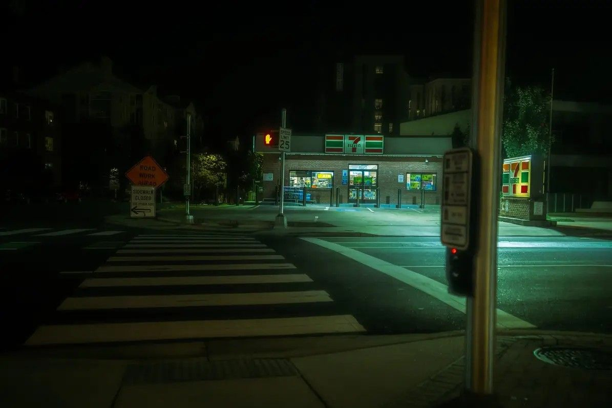
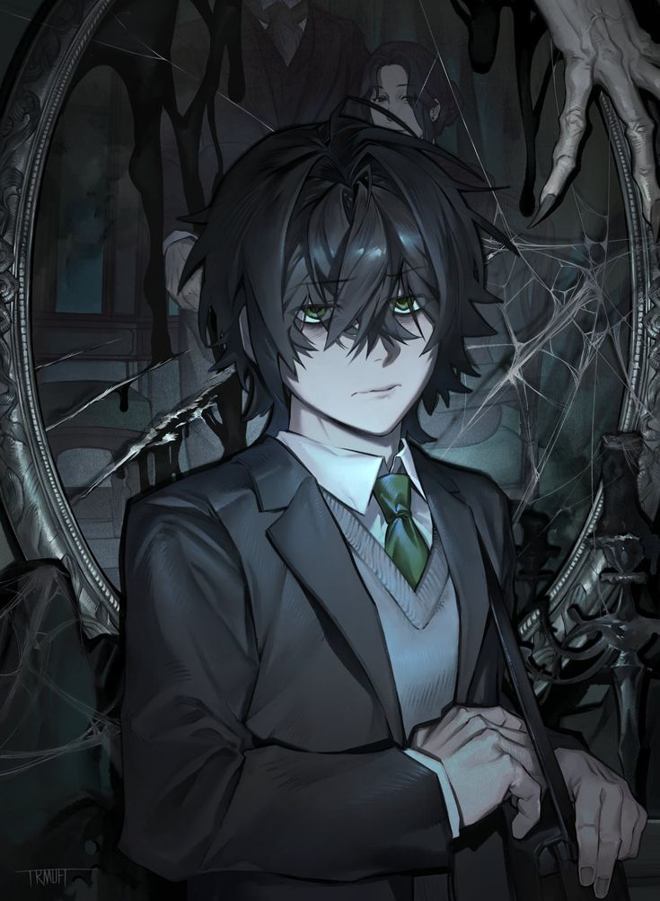
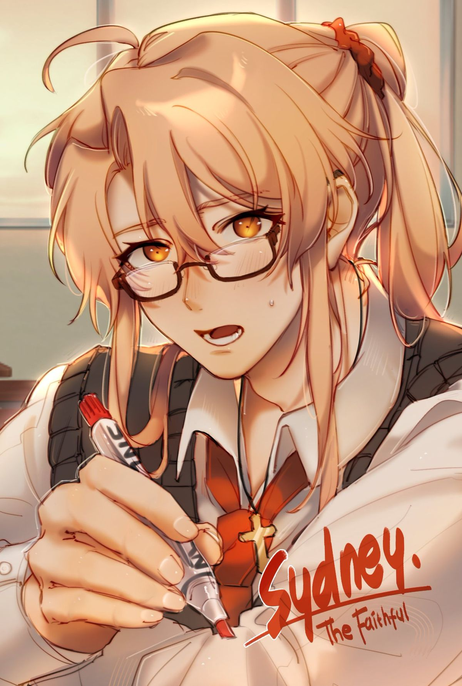
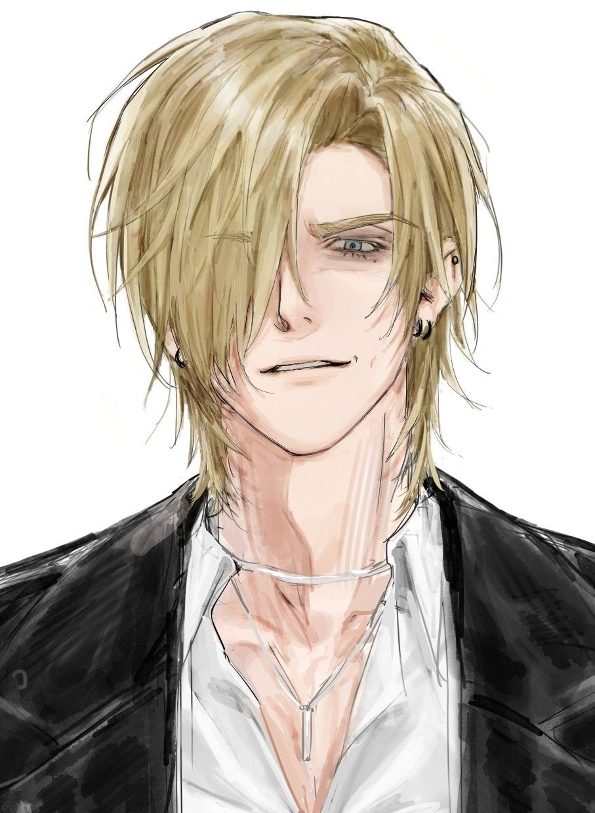

— ученик, который со временем становится одержимым игроком. Впервые его можно встретить в школьных коридорах, начиная со второй недели, когда над ним издеваются. Кайлар — явный изгой, над которым жестоко издеваются другие ученики школы, до такой степени, что многие называют его «уродом». По выходным или во время школьных каникул его можно встретить в игровом зале или в парке.
У него тот же учитель, что и у игрока, — Дорен. Поэтому Кайлар будет появляться на уроках английского языка игрока.
В качестве любовного интереса он может стать полезным партнёром или ненормальным преследователем — в зависимости от действий игрока. Он будет оказывать игроку много полезной помощи, но будет всё сильнее ревновать, когда игрок будет проводить время с другими людьми.
В связи с его статусом любовного интереса внешность Кайлара в основном остаётся на усмотрение игрока; однако его всегда описывают как имеющего тёмную челку, небольшой рост, из-за которого персонаж игрока поначалу принимает его за младшекурсника, и маленькие руки. Поклонники обычно изображают Кайлара с зелёными глазами из-за значка «Ревность», отображаемого в его характеристиках, хотя цвет его глаз в игре не подтверждён.
Кайлар уникален среди NPC тем, что его описание слегка варьируется в зависимости от физических характеристик игрока. В частности, в зависимости от роста игрока, рост Кайлара по отношению к игроку будет описываться по-разному.

— перегруженный работой, прилежный одноклассник игрока и новичок в Храме . При первом знакомстве он ведет себя прилично и неизменно вежлив, хотя у него тоже есть свои пределы.
Будучи помощником школьного библиотекаря, Сидней, неудивительно, настоящий книголюб. Он управляет библиотекой со своего прилавка в библиотеке, где ожидает от одноклассников такого же уважительного отношения к книгам, какое проявляет сам.
Сидней описывается как человек с янтарными глазами, подчеркнутыми очками для чтения. У него светло-русые волосы, собранные в хвост.
На шее у него висит священный кулон, указывающий на его религиозные связи. Он тщательно хранит свои религиозные убеждения, ежедневно выполняя обряды и молитвы.
Как указано выше, на поступки Сиднея могут влиять решения игрока, и это распространяется также на его внешний вид. Например, игрок может заставить Сиднея покрасить волосы в другой цвет, например, в чёрный, и носить цветные контактные линзы вместо очков. Кроме того, он может распустить волосы, чтобы они свободно свисали.
Трудолюбивый характер Сидни имеет и обратную сторону: она переутомляется из-за того, что пытается справляться со слишком многими делами одновременно. По утрам игроку, возможно, придётся будить Сидни, чтобы она не опоздала на занятия в школе, а в течение дня её часто можно увидеть зевающей от усталости.

— проблемный, но популярный ученик, который будет придираться к игроку. Впервые с ним можно столкнуться в школьных коридорах уже на первый или второй день учебы. Уитни будет пытаться издеваться над игроком любыми возможными способами.
Как правило, Уитни можно встретить на территории школы — и он почти всегда появляется в окружении своих приспешников. Кроме того, у него и у игрока один и тот же учитель — Ривер. Поэтому Уитни будет появляться на уроках математики игрока, причём он, как правило, пропускает эти уроки, если у игрока не достаточно высокий показатель «Любовь» по отношению к нему.
В пасмурные (например, дождливые) дни Уитни можно встретить у фонтана в парке, где он, укрывшись под зонтиком, погружен в мрачные размышления. Это одна из немногих возможностей для игрока увидеть его наедине.
Его роль в качестве NPC в первую очередь заключается в издевательствах над игроком: он унижает его при любой возможности и не проявляет никакого раскаяния.
В связи со своим статусом любовного интереса внешность Уитни в основном будет оставаться на усмотрение игрока.
Однако его всегда будут описывать или изображать так, что у него светлые волосы, закрывающие один глаз. Кроме того, он известен как популярный, но проблемный ученик.